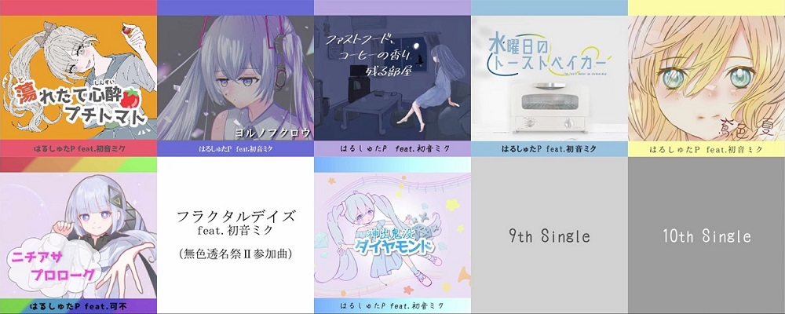

はるしゅたP/Hallsteinのホームページ 最終更新：2023/12/08 02:30
作曲家ネーム：Wider Musik Hallstein （ヴィーデル・ムジーク・ハルシュタイン） ボカロPネーム：はるしゅたP 作曲ジャンル：管弦楽曲、アンサンブル曲、ピアノ曲、ボカロ曲 楽譜制作ソフト：MuseScore 2 and MuseScore 3 打ち込みソフト：Cakewalk by BandLab 使用音源：Vienna Special Edition ver.1 初音ミクV4X、CeVio AI 可不 作曲歴：12年
YouTubeチャンネル Niconicoマイページ Piapro Soundcloud Twitter(Hallstein) Twitter(はるしゅたP) Instagram(はるしゅたP)
＜投稿作品＞ 〇自作曲 Night Wind, op.1 交響夜想曲「小夜風」（作品１）>>YouTube 6分40秒
Torrent, op.2 二台ピアノ曲「Torrent」（作品２）>>YouTube 1分57秒
Excursion, op.3 木管五重奏曲「小さな旅」（作品３）>>YouTube 4分43秒
A Tweet Made by the Piano No.1, op.4 ピアノ曲「ピアノのさえずり 第一番」（作品４）>>YouTube 0分38秒
Rain Scale, op.5 （作品５） >>SoundCloud (YouTube近日公開、楽譜製作中) 6分40秒
〇ボカロオリジナル曲  「蕩れたて心酔プチトマト feat.初音ミク」>>各種サブスク YouTube Niconico Soundcloud 4分50秒 (Title in English: Petit-tomato-girl is infatuated with you - Hatsune Miku) 投稿ツイート 過去曲紹介ツイート（ボーカルとベースの楽譜付き）
「ヨルノフクロウ feat.初音ミク」>>各種サブスク YouTube Niconico 4分25秒 (Title in English: Night Owl - Hatsune Miku) 投稿ツイート 過去曲紹介ツイート（ボーカルとベースの楽譜付き）
「ファストフード、コーヒーの香り残る部屋 / 初音ミク」>>各種サブスク YouTube Niconico 4分15秒 (Title in English: Fast Foods and Coffee Fragrance is Left in the Room - Hatsune Miku) 投稿ツイート 過去曲紹介ツイート（ボーカルとベースの楽譜付き）
「水曜日のトーストベイカー / 初音ミク」>>各種サブスク YouTube Niconico 4分00秒 (Title in English: The Toast Baker on Wednesday - Hatsune Miku) 投稿ツイート ボーカルとベースの楽譜ツイート
「鳶色ノ夏 / 初音ミク」>>各種サブスク YouTube Niconico 5分00秒 (Title in English: Summer has been Colored Reddish Browns - Hatsune Miku) 投稿ツイート 「ニチアサプロローグ / 可不」>>各種サブスク YouTube Niconico 3分25秒 (Title in English: Prologue in the Sunday Morning - KAFU) 投稿ツイート ボーカルと簡易伴奏の楽譜ツイート 「フラクタルデイズ / 初音ミク」（無色透名祭Ⅱ版）>>YouTube Niconico 2分08秒 (Title in English: Fractal Days (Fractal Daze) - Hatsune Miku) 投稿ツイート 楽譜ツイート 「神出鬼没ダイヤモンド / 初音ミク」>>各種サブスク YouTube Niconico 4分45秒 (Title in English: Your Diamond is Suddenly Here - Hatsune Miku) 投稿ツイート
〇編曲・アレンジ 【CMソングオーケストラアレンジ】いてくれてありがとう / 手嶌葵 >>YouTube 1分17秒
【オーケストラアレンジ】車道で叫ぶ米津玄師を叫びながら撥ねる宮本浩次 >>YouTube Niconico 0分42秒
【オーケストラアレンジ】Sonic - Starlight Zone >>YouTube Niconico 0分52秒
【オーケストラアレンジ】蛍の光 >>YouTube 1分38秒
【オーケストラアレンジ】美しい鰭 / スピッツ >>YouTube 3分33秒
君は完璧で究極のゲッターをオーケストラアレンジ！ >>YouTube Niconico 0分32秒
〇作業用BGM 10分間の作業用BGM「雨宿り」 >>YouTube 10分00秒
＜今後の投稿予定＞ >>進捗動画まとめ ・短調のオーケストラ曲 ・ボカロ曲 12/29 きつねうどんvsたぬきそば投稿祭 1月 9作目 2/22 ボカコレ2024冬 3月 1stアルバム公開